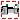
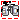

Components that constrain the motion between two frames
Extends from Modelica.Icons.Package (Icon for standard packages).
| Name | Description |
|---|---|
|  Prismatic | Prismatic joint (1 translational degree-of-freedom, 2 potential states, optional axis flange, optional distance offset) |
|  Revolute | Revolute joint (1 rotational degree-of-freedom, 2 potential states, optional axis flange, optional angle offset) |
Prismatic joint (1 translational degree-of-freedom, 2 potential states, optional axis flange, optional distance offset)
Joint where frame_b is translated along axis n which is fixed in frame_a. The two frames coincide when the relative distance "s = 0".
Optionally, two additional 1-dimensional mechanical flanges (flange "axis" represents the driving flange and flange "support" represents the bearing) can be enabled via parameter useAxisFlange. The enabled axis flange can be driven with elements of the Modelica.Mechanics.Translational library.
In the "Advanced" menu it can be defined via parameter stateSelect that the relative distance "s" and its derivative shall be definitely used as states by setting stateSelect=StateSelect.always. Default is StateSelect.prefer to use the relative distance and its derivative as preferred states. The states are usually selected automatically. In certain situations, especially when closed kinematic loops are present, it might be slightly more efficient, when using the StateSelect.always setting.
In the following figure the animation of a prismatic joint is shown. The light blue coordinate system is frame_a and the dark blue coordinate system is frame_b of the joint. The black arrow is parameter vector "n" defining the translation axis (here: n = {1,1,0}).
Extends from Modelica.Icons.ObsoleteModel (Icon for classes that are obsolete and will be removed in later versions), Modelica.Mechanics.MultiBody.Interfaces.PartialElementaryJoint (Base model for elementary joints (has two frames + outer world + assert to guarantee that the joint is connected)).
| Name | Description |
|---|---|
| useAxisFlange | = true, if axis flange is enabled |
| animation | = true, if animation shall be enabled |
| n | Axis of translation resolved in frame_a (= same as in frame_b) [1] |
| s_offset | Relative distance offset (distance between frame_a and frame_b = s_offset + s) [m] |
| Animation | |
| if animation = true | |
| boxWidthDirection | Vector in width direction of box, resolved in frame_a [1] |
| boxWidth | Width of prismatic joint box [m] |
| boxHeight | Height of prismatic joint box [m] |
| boxColor | Color of prismatic joint box |
| specularCoefficient | Reflection of ambient light (= 0: light is completely absorbed) |
| Advanced | |
| stateSelect | Priority to use distance s and v=der(s) as states |
| Name | Description |
|---|---|
| frame_a | Coordinate system fixed to the joint with one cut-force and cut-torque |
| frame_b | Coordinate system fixed to the joint with one cut-force and cut-torque |
| axis | 1-dim. translational flange that drives the joint |
| support | 1-dim. translational flange of the drive support (assumed to be fixed in the world frame, NOT in the joint) |
Revolute joint (1 rotational degree-of-freedom, 2 potential states, optional axis flange, optional angle offset)
Joint where frame_b rotates around axis n which is fixed in frame_a. The two frames coincide when the rotation angle "phi = 0".
Optionally, two additional 1-dimensional mechanical flanges (flange "axis" represents the driving flange and flange "support" represents the bearing) can be enabled via parameter useAxisFlange. The enabled axis flange can be driven with elements of the Modelica.Mechanics.Rotational library.
In the "Advanced" menu it can be defined via parameter stateSelect that the rotation angle "phi" and its derivative shall be definitely used as states by setting stateSelect=StateSelect.always. Default is StateSelect.prefer to use the joint angle and its derivative as preferred states. The states are usually selected automatically. In certain situations, especially when closed kinematic loops are present, it might be slightly more efficient, when using the StateSelect.always setting.
If a planar loop is present, e.g., consisting of 4 revolute joints where the joint axes are all parallel to each other, then there is no longer a unique mathematical solution and the symbolic algorithms will fail. Usually, an error message will be printed pointing out this situation. In this case, one revolute joint of the loop has to be replaced by a Joints.RevolutePlanarLoopConstraint joint. The effect is that from the 5 constraints of a usual revolute joint, 3 constraints are removed and replaced by appropriate known variables (e.g., the force in the direction of the axis of rotation is treated as known with value equal to zero; for standard revolute joints, this force is an unknown quantity).
In the following figure the animation of a revolute joint is shown. The light blue coordinate system is frame_a and the dark blue coordinate system is frame_b of the joint. The black arrow is parameter vector "n" defining the translation axis (here: n = {0,0,1}, phi.start = 45o).

Extends from Modelica.Icons.ObsoleteModel (Icon for classes that are obsolete and will be removed in later versions).
| Name | Description |
|---|---|
| useAxisFlange | = true, if axis flange is enabled |
| animation | = true, if animation shall be enabled (show axis as cylinder) |
| n | Axis of rotation resolved in frame_a (= same as in frame_b) [1] |
| phi_offset | Relative angle offset (angle = phi_offset + phi) [rad] |
| Animation | |
| if animation = true | |
| cylinderLength | Length of cylinder representing the joint axis [m] |
| cylinderDiameter | Diameter of cylinder representing the joint axis [m] |
| cylinderColor | Color of cylinder representing the joint axis |
| specularCoefficient | Reflection of ambient light (= 0: light is completely absorbed) |
| Advanced | |
| stateSelect | Priority to use joint angle phi and w=der(phi) as states |
| Name | Description |
|---|---|
| axis | 1-dim. rotational flange that drives the joint |
| support | 1-dim. rotational flange of the drive support (assumed to be fixed in the world frame, NOT in the joint) |
| frame_a | Coordinate system fixed to the joint with one cut-force and cut-torque |
| frame_b | Coordinate system fixed to the joint with one cut-force and cut-torque |